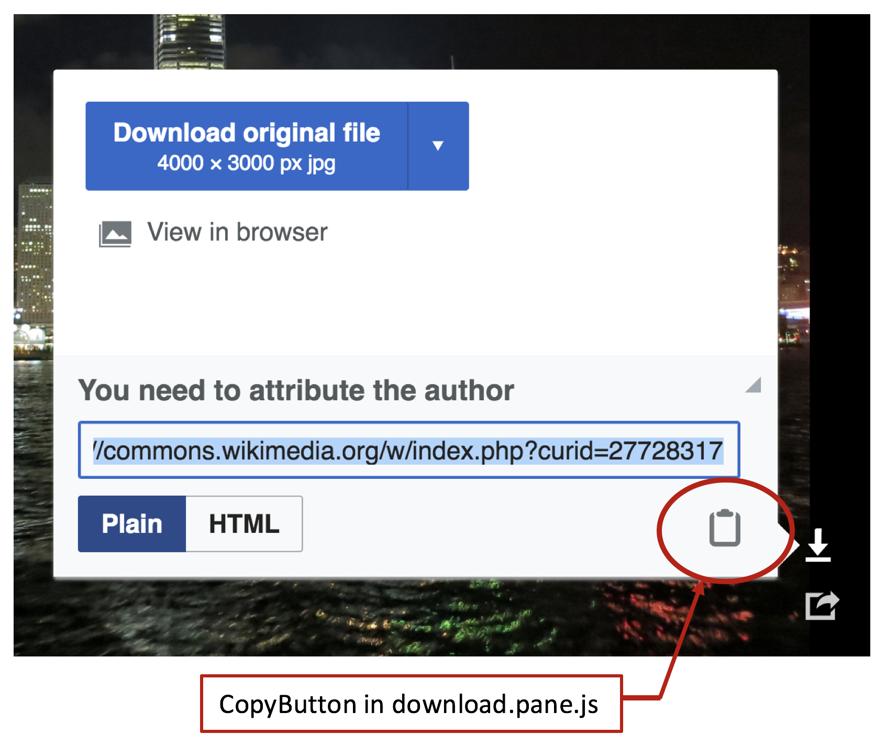
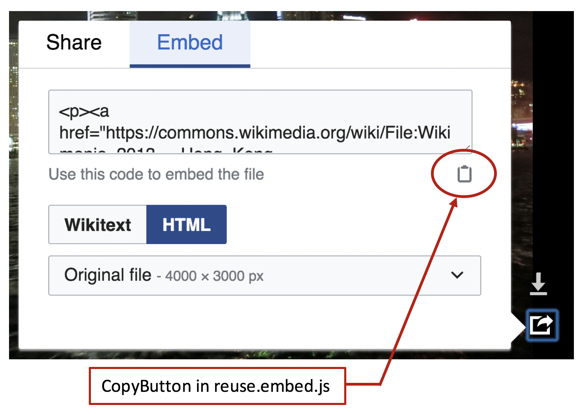
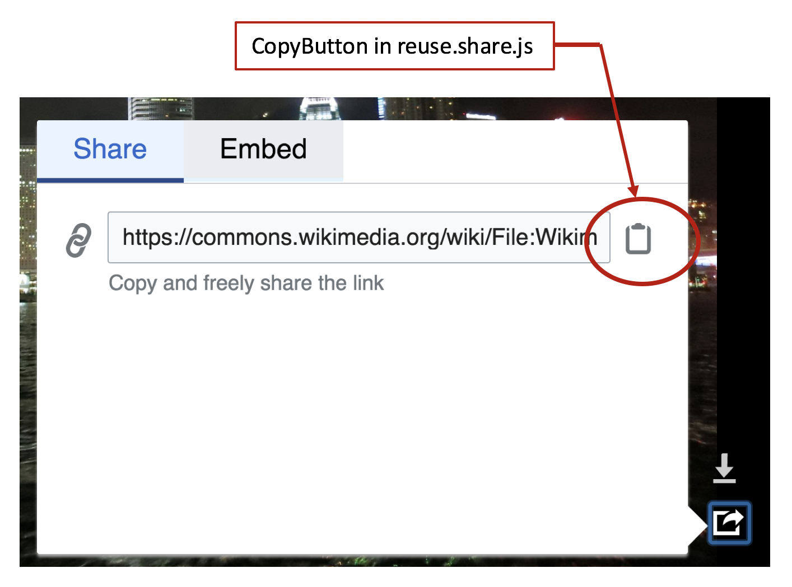
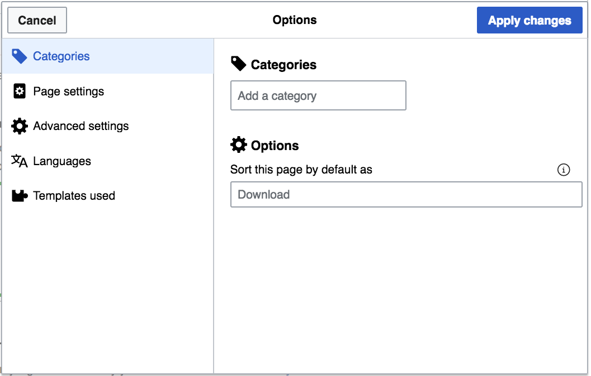
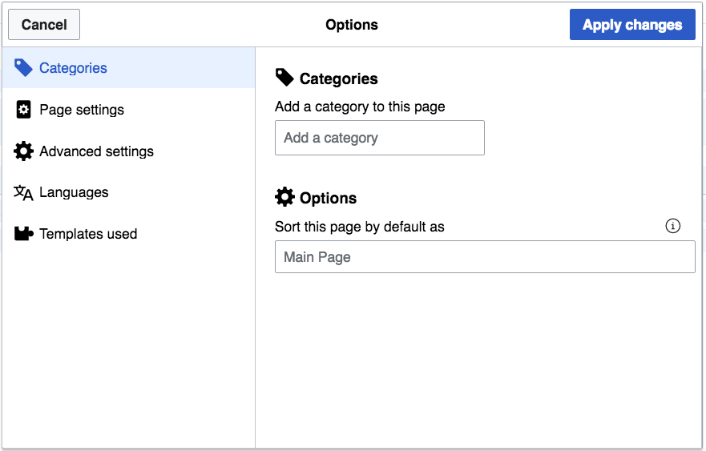
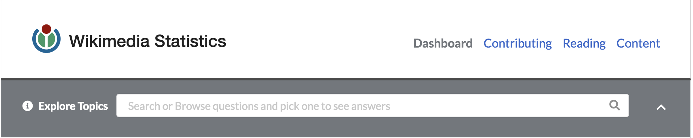
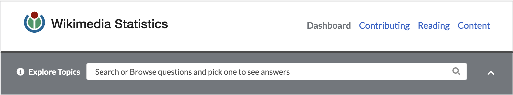

Jesse Buck
Daniel Collier
Michael Cornacchio
Hunter Hobbs
Jaziel Pauda
The following document is a summary of the improvements we (Blue Wall Group) have made to the MediaWiki free open source software project. Our improvements addressed accessibility concerns existing within the MediaWiki core and its extensions. Four of our contributions have been integrated into the current version of the MediaWiki software. Furthermore, we have contributed four additional changes that are awaiting acceptance from project reviewers. These contributions were part of our senior capstone project during the Spring 2018 semester at Metropolitan State University of Denver.
<button> Elements in the Multimedia Viewer Extension<div> Tags to <article> Tags in Flow Extension<button> Elements in the Multimedia Viewer ExtensionInteractive HTML elements that are not tagged correctly prevent accessibility hardware from communicating the functionality of the element to the user. This can lead to confusion and a poor experience for users with accessibility needs. Semantic HTML proposes writing DOM elements in a way that indicates their purpose and functionality. Some interactive <button> elements in the codebase for MultiMedia Viewer extension were fixed to reflect their functionality.



<button>'s were converted to <button>'s.<div> in permission.js was converted to a <button>.copyButton in download.pane.js and reuse.embed.js needed a CSS class (bootstrap.less) to offset some labeling text so that it wouldn’t interfere with the UI for users without accessibility needs.<a>-button-like element in StripeButtons.js that was a link. This was not converted because it is a link and the rationale is that <a>-link elements are used to go from page1 to page2 while buttons are used as an interactive interface within the page. A tabindex attribute was added to the StripeButton.js <a> element to make it focusable by the keyboard for accessibility needs.@@ -58,3 +58,12 @@
}
}
}
+
+.mw-mmv-button {
+ background-color: transparent;
+ min-width: 0;
+ border: 0;
+ padding: 0;
+ overflow-x: hidden;
+ text-indent: -9999em;
+}
@@ -198,8 +198,8 @@
)
.appendTo( this.$attributionSection );
this.attributionInput = attributionInput;
- this.$attributionCopy = this.$copyButton = $( '<a>' )
- .addClass( 'mw-mmv-dialog-copy' )
+ this.$attributionCopy = this.$copyButton = $( '<button>' )
+ .addClass( 'mw-ui-button mw-mmv-button mw-mmv-dialog-copy' )
.click( function () {
// Select the text, and then try to copy the text.
// If the copy fails or is not supported, continue as if nothing had happened.
@@ -216,6 +216,7 @@
}
} )
.prop( 'title', mw.msg( 'multimediaviewer-download-attribution-copy' ) )
+ .text( mw.msg( 'multimediaviewer-download-attribution-copy' ) )
.tipsy( {
delayIn: mw.config.get( 'wgMultimediaViewer' ).tooltipDelay,
gravity: this.correctEW( 'se' )
@@ -96,7 +96,7 @@
* "Close" button (does not actually close the box, just makes it smaller).
* @property {jQuery}
*/
- this.$close = $( '<div>' )
+ this.$close = $( '<button>' )
.addClass( 'mw-mmv-permission-close' )
.on( 'click', function () {
permission.shrink();
@@ -141,8 +141,8 @@
mw.mmv.actionLogger.log( 'embed-wikitext-copied' );
} );
- this.$copyButton = $( '<a>' )
- .addClass( 'mw-mmv-dialog-copy' )
+ this.$copyButton = $( '<button>' )
+ .addClass( 'mw-mmv-button mw-mmv-dialog-copy' )
.click( function () {
// Select the text, and then try to copy the text.
// If the copy fails or is not supported, continue as if nothing had happened.
@@ -159,6 +159,7 @@
}
} )
.prop( 'title', mw.msg( 'multimediaviewer-reuse-copy-embed' ) )
+ .text( mw.msg( 'multimediaviewer-reuse-copy-embed' ) )
.tipsy( {
delayIn: mw.config.get( 'wgMultimediaViewer' ).tooltipDelay,
gravity: this.correctEW( 'se' )
@@ -37,10 +37,9 @@
.mw-mmv-dialog-copy {
float: right;
- width: 1em;
- height: 1em;
- margin: 10px 0.5em 20px 0;
- padding: 0 0 0 5px;
+ width: 1.5em;
+ height: 1.5em;
+ margin: 10px 0.75em 20px 0.75em;
}
}
@@ -67,8 +67,8 @@
mw.mmv.actionLogger.log( 'share-page' );
} );
- this.$copyButton = $( '<a>' )
- .addClass( 'mw-mmv-dialog-copy' )
+ this.$copyButton = $( '<button>' )
+ .addClass( 'mw-mmv-button mw-mmv-dialog-copy' )
.click( function () {
// Select the text, and then try to copy the text.
// If the copy fails or is not supported, continue as if nothing had happened.
@@ -85,6 +85,7 @@
}
} )
.prop( 'title', mw.msg( 'multimediaviewer-reuse-copy-share' ) )
+ .text( mw.msg( 'multimediaviewer-reuse-copy-share' ) )
.tipsy( {
delayIn: mw.config.get( 'wgMultimediaViewer' ).tooltipDelay,
gravity: this.correctEW( 'se' )
@@ -18,13 +18,12 @@
.mw-mmv-dialog-copy {
// style rules based on .mw-mmv-share-page-link
float: right;
- width: 1.5em;
- height: 1.5em;
+ width: 2em;
+ height: 2em;
// position approximately to the middle - probably fragile but couldn't find a better way as
// the height of OOUI input widget has both em and px parts and not possible to calculate
// exactly
- margin: 8px 0.5em 8px 0;
- padding: 0 0 0 5px;
+ margin: 8px 0.5em;
}
}
@@ -59,7 +59,8 @@
$button = $( '<a>' )
.addClass( 'mw-mmv-stripe-button empty ' + cssClass )
// elements are right-floated so we use prepend instead of append to keep the order
- .prependTo( this.$buttonContainer );
+ .prependTo( this.$buttonContainer )
+ .attr( 'tabindex', '0' );
return $button;
};
Gerrit patch submission, review, and code changes
This contribution was merged on 4/17/2018 after three patch sets and was deployed on 4/24/2018.
Labeling all <input> elements in a page improves the interactive experience of users with visual and cognitive disabilities. Furthermore, input labels provide additional content to assistive technologies. Previously, the input fields in the “Categories” section of the “Options” dialog page in Visual Editor relied on the input widget placeholders and user intuition to convey the necessary information to understand the user interface and fulfill user tasks. An input label was added to the first input filed in the “Categories” page to fix this issue.
Before adding category label:

After adding category label:

extension.json file of the extension.en.json file of the codebase.qqq.json file that described the purpose of the label as well as the information it conveyed to the user so that this new label could be translated accurately into the different languages MediaWiki supports.ve.ui.MWCategoriesPage.js file that included the category input widget as well as the newly created label for that input widget to display the new elements together in the “Categories” page of the extension.@@ -1693,6 +1693,7 @@
"visualeditor-categories-tool",
"visualeditor-dialog-meta-advancedsettings-label",
"visualeditor-dialog-meta-advancedsettings-section",
+ "visualeditor-dialog-meta-categories-addcategory-label",
"visualeditor-dialog-meta-categories-category",
"visualeditor-dialog-meta-categories-data-label",
"visualeditor-dialog-meta-categories-defaultsort-help",
@@ -151,6 +151,7 @@
"visualeditor-dialog-media-upload": "Upload",
"visualeditor-dialog-meta-advancedsettings-label": "Advanced settings",
"visualeditor-dialog-meta-advancedsettings-section": "Advanced settings",
+ "visualeditor-dialog-meta-categories-addcategory-label": "Add a category to this page",
"visualeditor-dialog-meta-categories-category": "Category",
"visualeditor-dialog-meta-categories-data-label": "Categories",
"visualeditor-dialog-meta-categories-defaultsort-help": "You can override how this page is sorted when displayed within a category by setting a different index to sort with instead. This is often used to make pages about people show by last name, but be named with their first name shown first.",
@@ -165,6 +165,7 @@
"visualeditor-dialog-media-upload": "Label for the upload button\n{{Identical|Upload}}",
"visualeditor-dialog-meta-advancedsettings-label": "Title for the advanced settings dialog section.\n{{Identical|Advanced settings}}",
"visualeditor-dialog-meta-advancedsettings-section": "Label for the advanced settings dialog section.\n{{Identical|Advanced settings}}",
+ "visualeditor-dialog-meta-categories-addcategory-label": "Label for field that adds a category to the page",
"visualeditor-dialog-meta-categories-category": "Title of popup for editing category options.\n{{Identical|Category}}",
"visualeditor-dialog-meta-categories-data-label": "Label for the categories sub-section.\n{{Identical|Category}}",
"visualeditor-dialog-meta-categories-defaultsort-help": "Message displayed as contextual help about the <nowiki>{{DEFAULTSORT:…}}</nowiki> control to editors in the page categories panel.",
@@ -31,13 +31,25 @@
label: ve.msg( 'visualeditor-dialog-meta-categories-data-label' ),
icon: 'tag'
} );
+
this.categoryOptionsFieldset = new OO.ui.FieldsetLayout( {
label: ve.msg( 'visualeditor-dialog-meta-categories-options' ),
icon: 'advanced'
} );
+
this.categoryWidget = new ve.ui.MWCategoryWidget( {
$overlay: config.$overlay
} );
+
+ this.addCategory = new OO.ui.FieldLayout(
+ this.categoryWidget,
+ {
+ $overlay: config.$overlay,
+ align: 'top',
+ label: ve.msg( 'visualeditor-dialog-meta-categories-addcategory-label' )
+ }
+ );
+
this.defaultSortInput = new OO.ui.TextInputWidget( {
placeholder: this.fallbackDefaultSortKey
} );
@@ -64,7 +76,7 @@
} );
// Initialization
- this.categoriesFieldset.$element.append( this.categoryWidget.$element );
+ this.categoriesFieldset.addItems( [ this.addCategory ] );
this.categoryOptionsFieldset.addItems( [ this.defaultSort ] );
this.$element.append( this.categoriesFieldset.$element, this.categoryOptionsFieldset.$element );
};
Gerrit patch submission, review, and code changes
<div> Tags to <article> Tags in Flow ExtensionThis contribution was merged on 2/21/2018 after one patch set and was deployed on 2/27/2018.
MDN and W3 specify HTML conventions that ensure semantic HTML. These standards specify that the <article> tag is for forum posts, blog posts, news stories and comments. Within the MediaWiki Flow extension, several <div> elements needed to be changed into <article> elements in order to adhere to the above standards because they contained comments and forum posts.
Since this improvement consisted of only semantic HTML changes it involved no visual changes or representation.
<article> tags.<div> tags that needed to be fixed were identified by searching for the HTML tags that had the CSS classes “flow-post-content” and “mw-parser-output” because those classes are the ones applied to elements that contain the content of the forum posts and comments created by users with the Flow extension.<article> tags.@@ -159,9 +159,9 @@
'.$sp.''.((LCRun3::ifvar($cx, ((isset($in['isModerated']) && is_array($in)) ? $in['isModerated'] : null))) ? ' <div class="flow-moderated-post-content">
'.$sp.''.LCRun3::p($cx, 'flow_post_moderation_state', array(array($in),array()), ' ').' </div>
'.$sp.'' : '').'
-'.$sp.' <div class="flow-post-content mw-parser-output">
+'.$sp.' <article class="flow-post-content mw-parser-output">
'.$sp.' '.LCRun3::ch($cx, 'escapeContent', array(array(((isset($in['content']['format']) && is_array($in['content'])) ? $in['content']['format'] : null),((isset($in['content']['content']) && is_array($in['content'])) ? $in['content']['content'] : null)),array()), 'encq').'
-'.$sp.' </div>
+'.$sp.' </article>
'.$sp.'
'.$sp.''.LCRun3::p($cx, 'flow_post_meta_actions', array(array($in),array()), ' ').''.LCRun3::p($cx, 'flow_post_actions', array(array($in),array()), ' ').'</div>
';},'flow_anon_warning' => function ($cx, $in, $sp) {return ''.$sp.'<div class="flow-anon-warning">
@@ -159,9 +159,9 @@
'.$sp.''.((LCRun3::ifvar($cx, ((isset($in['isModerated']) && is_array($in)) ? $in['isModerated'] : null))) ? ' <div class="flow-moderated-post-content">
'.$sp.''.LCRun3::p($cx, 'flow_post_moderation_state', array(array($in),array()), ' ').' </div>
'.$sp.'' : '').'
-'.$sp.' <div class="flow-post-content mw-parser-output">
+'.$sp.' <article class="flow-post-content mw-parser-output">
'.$sp.' '.LCRun3::ch($cx, 'escapeContent', array(array(((isset($in['content']['format']) && is_array($in['content'])) ? $in['content']['format'] : null),((isset($in['content']['content']) && is_array($in['content'])) ? $in['content']['content'] : null)),array()), 'encq').'
-'.$sp.' </div>
+'.$sp.' </article>
'.$sp.'
'.$sp.''.LCRun3::p($cx, 'flow_post_meta_actions', array(array($in),array()), ' ').''.LCRun3::p($cx, 'flow_post_actions', array(array($in),array()), ' ').'</div>
';},'flow_anon_warning' => function ($cx, $in, $sp) {return ''.$sp.'<div class="flow-anon-warning">
@@ -137,9 +137,9 @@
'.$sp.''.((LCRun3::ifvar($cx, ((isset($in['isModerated']) && is_array($in)) ? $in['isModerated'] : null))) ? ' <div class="flow-moderated-post-content">
'.$sp.''.LCRun3::p($cx, 'flow_post_moderation_state', array(array($in),array()), ' ').' </div>
'.$sp.'' : '').'
-'.$sp.' <div class="flow-post-content mw-parser-output">
+'.$sp.' <article class="flow-post-content mw-parser-output">
'.$sp.' '.LCRun3::ch($cx, 'escapeContent', array(array(((isset($in['content']['format']) && is_array($in['content'])) ? $in['content']['format'] : null),((isset($in['content']['content']) && is_array($in['content'])) ? $in['content']['content'] : null)),array()), 'encq').'
-'.$sp.' </div>
+'.$sp.' </article>
'.$sp.'
'.$sp.''.LCRun3::p($cx, 'flow_post_meta_actions', array(array($in),array()), ' ').''.LCRun3::p($cx, 'flow_post_actions', array(array($in),array()), ' ').'</div>
';},'flow_anon_warning' => function ($cx, $in, $sp) {return ''.$sp.'<div class="flow-anon-warning">
@@ -11,9 +11,9 @@
</div>
{{/if}}
- <div class="flow-post-content mw-parser-output">
+ <article class="flow-post-content mw-parser-output">
{{escapeContent content.format content.content}}
- </div>
+ </article>
{{> flow_post_meta_actions}}
{{> flow_post_actions}}
Gerrit patch submission, review, and code changes
This contribution was merged on 4/20/2018 after four patch sets.
WCAG establishes contrast requirements to ensure text readability. Additionally, MediaWiki uses WikiMedia’s stylelint configuration to ensure quality CSS code. The Wikistats 2.0 search bar placeholder did not meet WCAG contrast requirements. Also, stylelint identified errors in the file containing the aforementioned placeholder. The placeholder needed to be changed to a color that met contrast requirements and was also consistent with the Wikistats 2.0 color palette.
Before contrast modification:

After contrast modification:

type attribute to “search” rather than text.border-radius to MediaWiki’s standard of 2px.sans-serif as generic backup font to Lato.placeholder color to meet contrast requirements.@@ -18,7 +18,7 @@
<div class="ui search">
<div class="ui icon input">
- <input class="prompt" type="text" v-model="searchDisplay"
+ <input class="prompt" type="search" v-model="searchDisplay"
placeholder="Search or Browse questions and pick one to see answers"
@blur="onBlur"
@keyup.enter="select"
@@ -122,105 +122,122 @@
<style scoped>
.animateable {
- transition: all .4s;
+ transition: all 0.4s;
}
.slide.transition.container {
- position: relative;
- height: 43px;
- margin: -2px -32px 0 -24px;
+ position: relative;
+ height: 43px;
+ margin: -2px -32px 0 -24px;
}
.slide.transition.animateable.container.down {
- height: 87px;
+ height: 87px;
}
.slide.transition.container > div {
- position: absolute;
+ position: absolute;
}
.animateable.topic.searcher {
- top: -84px;
+ top: -84px;
}
.animateable.topic.searcher.down {
- top: 0;
+ top: 0;
}
-.xui.grey.corner.button, .ui.grey.inverted.segment {
- background-color: #72777d!important;
+.xui.grey.corner.button,
+.ui.grey.inverted.segment {
+ background-color: #72777d !important;
}
.xui.corner.button {
- display: inline-block;
- text-align: center!important;
- line-height: 40px;
- margin: 0;
- width: 163px;
- height: 40px;
- border-radius: 0 0 3px 0;
- background-color: #72777d;
- cursor: pointer;
+ display: inline-block;
+ text-align: center !important;
+ line-height: 40px;
+ margin: 0;
+ width: 163px;
+ height: 40px;
+ border-radius: 0 0 2px 0;
+ background-color: #72777d;
+ cursor: pointer;
- font-family: Lato;
- font-size: 16px;
- font-weight: 900;
- text-align: left;
- color: #ffffff;
+ font-family: 'Lato', sans-serif;
+ font-size: 16px;
+ font-weight: 900;
+ text-align: left;
+ color: #fff;
}
.xui.link {
- cursor: pointer;
+ cursor: pointer;
}
.ui.inverted.segment {
- width: 100%;
- height: 84px;
- padding: 20px 30px;
- margin: 0;
- border-radius: 0;
- font-size: 16px;
- font-weight: 900;
- color: #ffffff;
+ width: 100%;
+ height: 84px;
+ padding: 20px 30px;
+ margin: 0;
+ border-radius: 0;
+ font-size: 16px;
+ font-weight: 900;
+ color: #fff;
+}
+
+.ui.search .ui.input ::-webkit-input-placeholder {
+ color: #54595d;
+}
+
+.ui.search .ui.input ::-ms-input-placeholder {
+ color: #54595d;
+}
+
+.ui.search .ui.input ::-moz-placeholder {
+ color: #54595d;
+ opacity: 1;
}
.ui.search {
- display: inline-block;
- width: 79%;
- margin-left: 10px;
- margin-right: 6px;
+ display: inline-block;
+ width: 79%;
+ margin-left: 10px;
+ margin-right: 6px;
}
.ui.search .ui.input {
- width: 100%;
+ width: 100%;
}
.ui.inverted.segment .ui.search .ui.input input {
- height: 35px;
- border-radius: 0.28571429rem;
+ height: 35px;
+ border-radius: 2px;
}
-.dropdown.button { width: 70%; margin-left: 10px; }
+.dropdown.button {
+ width: 70%;
+ margin-left: 10px;
+}
.ui.blue.button {
- background-color: #3366cc!important;
- width: 78px;
+ background-color: #36c !important;
+ width: 78px;
}
-@media(max-width: 450px) {
- .xui.grey.corner.button {
- width: 100vw;
- margin-left: -1px;
- border-radius: 0;
- }
- .slide.transition.container {
- margin: 0;
- }
- .xui.link {
- margin: 0;
- padding: 0;
- }
+@media ( max-width: 450px ) {
+ .xui.grey.corner.button {
+ width: 100vw;
+ margin-left: -1px;
+ border-radius: 0;
+ }
+ .slide.transition.container {
+ margin: 0;
+ }
+ .xui.link {
+ margin: 0;
+ padding: 0;
+ }
}
-@media(max-width: 1000px) {
- .ui.segment.topic.searcher {
- padding: 10px;
- }
- .xui.link {
- display: inline-block;
- margin-bottom: 10px;
- }
- .topic.searcher .ui.search {
- width: 97%;
- }
+@media ( max-width: 1000px ) {
+ .ui.segment.topic.searcher {
+ padding: 10px;
+ }
+ .xui.link {
+ display: inline-block;
+ margin-bottom: 10px;
+ }
+ .topic.searcher .ui.search {
+ width: 97%;
+ }
}
</style>
Gerrit patch submission, review, and code changes
This contribution is awaiting feedback as of 4/25/2018 after two patch sets.
MediaWiki HTML standards specify that there must not be more than one <h1> heading per page. This specification facilitates accurate screen reader navigation, maintains a separation between navigation and content, and ensures a logical heading structure. The home page of the MediaWiki QuizGame extension was structured entirely with <h1> headings. All those headings needed to be changed to <h2> elements in order to comply with the mentioned accessibility standards.
Since this improvement consisted of only semantic HTML changes it involved no visual changes or representation.
<h1> headings.<h1> headings was changed to a <h2> heading.<h1> tags were removed from the code because the styling they applied to the headings were no longer needed with the new heading structure.@@ -418,10 +418,10 @@
$this->msg( 'quizgame-admin-back' )->text() . '</a>
</div>
- <h1>' . $this->msg( 'quizgame-admin-flagged' )->text() . "</h1>
+ <h2>' . $this->msg( 'quizgame-admin-flagged' )->text() . "</h2>
{$flaggedQuestions}
- <h1>" . $this->msg( 'quizgame-admin-protected' )->text() . "</h1>
+ <h2>" . $this->msg( 'quizgame-admin-protected' )->text() . "</h2>
{$protectedQuestions}
</div>";
@@ -671,7 +671,7 @@
'">
<div class="credit-box" id="creditBox">
- <h1>' . $this->msg( 'quizgame-submitted-by' )->text() . "</h1>
+ <h2>' . $this->msg( 'quizgame-submitted-by' )->text() . "</h2>
<div id=\"submitted-by-image\" class=\"submitted-by-image\">
<a href=\"{$user_title->getFullURL()}\">
@@ -702,13 +702,13 @@
<div class=\"ajax-messages\" id=\"ajax-messages\" style=\"margin:20px 0px 15px 0px;\"></div>
- <h1>" . $this->msg( 'quizgame-question' )->text() . "</h1>
+ <h2>" . $this->msg( 'quizgame-question' )->text() . "</h2>
<input name=\"quizgame-question\" id=\"quizgame-question\" type=\"text\" value=\"" .
htmlspecialchars( $question['text'], ENT_QUOTES ) . "\" size=\"64\" />
- <h1>" . $this->msg( 'quizgame-answers' )->text() . "</h1>
+ <h2>" . $this->msg( 'quizgame-answers' )->text() . "</h2>
<div style=\"margin:10px 0px;\">" . $this->msg( 'quizgame-correct-answer-checked' )->text() . "</div>
{$quizOptions}
- <h1>" . $this->msg( 'quizgame-picture' )->text() . "</h1>
+ <h2>" . $this->msg( 'quizgame-picture' )->text() . "</h2>
<div class=\"quizgame-edit-picture\" id=\"quizgame-edit-picture\">
{$pictag}
</div>
@@ -1170,7 +1170,7 @@
"</a>
</div>
<div class=\"credit-box\" id=\"creditBox\">
- <h1>" . $this->msg( 'quizgame-submitted-by' )->text() . "</h1>
+ <h2>" . $this->msg( 'quizgame-submitted-by' )->text() . "</h2>
<div id=\"submitted-by-image\" class=\"submitted-by-image\">
<a href=\"{$user_title->getFullURL()}\">
@@ -1363,9 +1363,9 @@
htmlspecialchars( $this->getPageTitle()->getFullURL( 'questionGameAction=createGame' ) ) . '">
<div id="quiz-game-errors" style="color:red"></div>
- <h1>' . $this->msg( 'quizgame-create-write-question' )->text() . '</h1>
+ <h2>' . $this->msg( 'quizgame-create-write-question' )->text() . '</h2>
<input name="quizgame-question" id="quizgame-question" type="text" value="" size="64" />
- <h1 class="write-answer">' . $this->msg( 'quizgame-create-write-answers' )->text() . '</h1>
+ <h2 class="write-answer">' . $this->msg( 'quizgame-create-write-answers' )->text() . '</h2>
<span style="margin-top:10px;">' . $this->msg( 'quizgame-create-check-correct' )->text() . '</span>
<span style="display:none;" id="this-is-the-welcome-page"></span>';
// the span#this-is-the-welcome-page element is an epic hack for JS
@@ -1389,8 +1389,8 @@
'</form>
- <h1 style="margin-top:20px">' .
- $this->msg( 'quizgame-create-add-picture' )->text() . '</h1>
+ <h2 style="margin-top:20px">' .
+ $this->msg( 'quizgame-create-add-picture' )->text() . '</h2>
<div id="quizgame-picture-upload">
<div id="real-form">
@@ -28,14 +28,6 @@
padding: 0 0 0 2px;
}
-.quizgame-edit-question h1 {
- font-size: 16px;
- font-weight: bold;
- border-bottom: none;
- color: #333;
- margin: 20px 0 10px 0 !important;
-}
-
.quizgame-picture img {
border: 1px solid #dcdcdc;
padding: 3px;
@@ -103,13 +95,6 @@
padding: 10px 0 0 0;
}
-.quizgame-admin h1 {
- font-size: 18px;
- color: #333;
- font-weight: bold;
- margin: 0 0 20px 0 !important;
-}
-
.quizgame-admin-top-links {
margin: -10px 0 20px 0;
}
@@ -124,13 +109,6 @@
margin: 0 0 20px 0;
padding: 0 0 20px 0;
width: 500px;
-}
-
-.quizgame-flagged-item h1 {
- font-size: 14px;
- font-weight: bold;
- color: #333;
- margin: 0 0 10px 0 !important;
}
.quizgame-flagged-picture img {
@@ -253,15 +231,6 @@
margin: 8px 0 0;
padding: 10px;
padding-bottom: 60px;
-}
-
-.credit-box h1 {
- border-bottom: none;
- color: #333;
- font-size: 16px;
- font-weight: bold;
- padding: 0;
- margin: 0 0 10px !important;
}
.last-game {
@@ -406,27 +375,6 @@
border: 1px solid #dcdcdc;
padding: 9px;
width: 500px;
-}
-
-.create-message h1 {
- font-size: 22px;
- border-bottom: none;
- font-weight: bold;
- margin: 0 0 10px !important;
-}
-
-.quizgame-create-form h1 {
- color: #333;
- font-size: 16px;
- font-weight: bold;
- border-bottom: none;
- margin: 20px 0 15px 0 !important;
-}
-
-h1.write-answer {
- color: #333;
- font-size: 16px;
- margin: 20px 0 10px 0 !important;
}
.quizgame-answer-number {
Gerrit patch submission, review, and code changes
This contribution is awaiting feedback as of 4/23/2018 after two patch sets.
Low contrast between text and its background presents an accessibility barrier. Wikistats 2.0 had several areas with poor contrast. In particular, its footer area and several text elements had inadequate contrast according to W3C standards. These colors needed to be changed to be WCAG compliant, using colors sourced from an existing MediaWiki color palette. Additionally, as a result of the color changes in the footer area, underlines needed to be added to the footer links to further distinguish them from surrounding text.
@@ -138,8 +138,8 @@
border-bottom: none;
}
.ui.attached.footer.segment {
- background-color: #3B3B3B;
- color: #AAAAAA;
+ background-color: #54595d;
+ color: #fff;
border: none;
}
@@ -32,6 +32,9 @@
</script>
<style scoped>
-a, a:visited { color: #888; }
+a, a:visited {
+ color: #eaf3ff;
+ border-bottom: 1px dashed #eaf3ff;
+}
.ui.centered { font-size: 1.1em; }
</style>
@@ -322,6 +322,6 @@
margin: 4px 2px 2px 2px;
}
.subdued {
- color: #9b9b9b;
+ color: #72777d;
}
</style>
@@ -240,7 +240,7 @@
border: solid 2px #cdcdcd!important;
font-size: 13px;
font-weight: 500;
- color: #9b9b9b!important;
+ color: #54595d!important;
padding: 5px 9px;
cursor: pointer;
}
@@ -201,7 +201,6 @@
.graph.panel h2.header .subdued {
margin-left: 4px;
font-size: 18px;
- color: #777;
font-weight: 300;
}
.graph.panel .ui.right.floated.buttons {
Gerrit patch submission, review, and code changes
This contribution is awaiting further work as of 4/16/2018 after one patch set.
Minor code changes can significantly increase a page’s accessibility. Markup issues in the Wikistats 2.0 extension posed a variety of accessibility limiters. These included missing HTML attributes, labels, and tags, as well as inappropriate elements. These needed to be resolved with various small changes.
lang attribute to html element.alt tag for WikiMedia logo.App.vue.div.@@ -2,7 +2,7 @@
<div>
<router-link :to="{project: $store.state.project}">
<div class="wikititle ui left floated header">
- <img class="ui mini image" src="../../assets/Wikimedia-logo.svg">
+ <img class="ui mini image" alt="Wikimedia logo" src="../../assets/Wikimedia-logo.svg">
<span class="text">Wikimedia Statistics</span>
</div>
</router-link>
@@ -18,7 +18,8 @@
<div class="ui search">
<div class="ui icon input">
- <input class="prompt" type="text" v-model="searchDisplay"
+ <label for="topicSearch">Search for a Question</label>
+ <input id="topicSearch" class="prompt" type="text" v-model="searchDisplay"
placeholder="Search or Browse questions and pick one to see answers"
@blur="onBlur"
@keyup.enter="select"
@@ -223,4 +224,9 @@
width: 97%;
}
}
+
+label[ for='topicSearch' ]
+{
+ display: none;
+}
</style>
@@ -2,7 +2,8 @@
<div>
<div class="ui search">
<div class="ui icon input">
- <input class="prompt" type="text" v-model="inputText"
+ <label for="wikiSearch">Search for a Wiki</label>
+ <input id="wikiSearch" class="prompt" type="text" v-model="inputText"
ref="inputBox"
:placeholder="placeholder"
@click="open"
@@ -344,4 +345,9 @@
margin-left: 1em;
}
}
+
+label[ for='wikiSearch' ]
+{
+ display: none;
+}
</style>
@@ -1,10 +1,10 @@
<template>
-<section class="widgets">
+<section class="widgets" role="main">
<div class="ui clearing basic top segment">
<h2 class="ui left floated header">Monthly overview</h2>
- <h5 class="ui right floated header wikiselector">
+ <div class="ui right floated header wikiselector">
<wiki-selector :single="true"></wiki-selector>
- </h5>
+ </div>
</div>
<div class="ui basic area segment"
v-for="a in areas"
@@ -1,5 +1,5 @@
<!DOCTYPE html>
-<html>
+<html lang="en">
<head>
<meta charset="utf-8">
<meta name="viewport" content="width=device-width, initial-scale=1, user-scalable=no">
Gerrit patch, submission, review and code changes